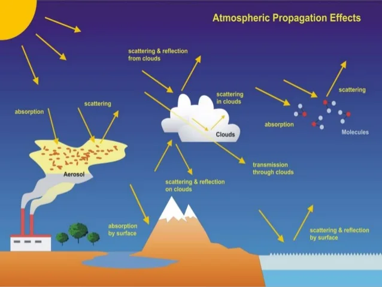
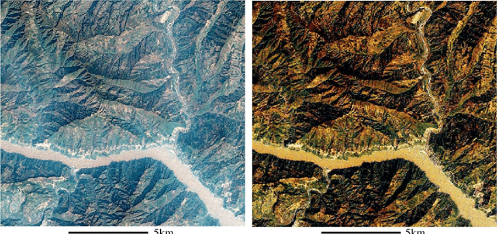
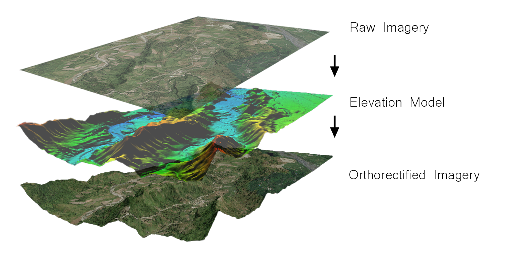

3 Corrections
This week, we learned about various corrections in remote sensing data and the application scenarios of related applications in practical scientific research. Reflect on what I have learned, how the content in the field relates to future learning and the possibilities for future exploration.
3.1 About the corrections
3.1.1 Pre-processing requirements
The remote sensing data acquisition process is affected by several factors that can degrade the quality of the acquired images. This may affect the accuracy of image analysis. The purpose of image correction and restoration is to correct ::: panel-tabset ## Pyramid Scaling
In Earth Engine, the spatial resolution is determined by the output, not the input. The system stores a ‘pyramid’ of progressively reduced resolution tiles, which adjust depending on the scale of the user’s view. The smaller (reduced resolution) layers of the pyramid are calculated through a down-sampling method, such as the mean for numeric data, or the mode for classification data.
3.2 Lazy Computation
‘Lazy’ computatio::: panel-tabset ## Pyramid Scaling
In Earth Engine, the spatial resolution is determined by the output, not the input. The system stores a ‘pyramid’ of progressively reduced resolution tiles, which adjust depending on the scale of the user’s view. The smaller (reduced resolution) layers of the pyramid are calculated through a down-sampling method, such as the mean for numeric data, or the mode for classification data.
3.3 Lazy Computation
::: panel-tabset ## Pyramid Scaling
In Earth Engine, the spatial resolution is determined by the output, not the input. The system stores a ‘pyramid’ of progressively reduced resolution tiles, which adjust depending on the scale of the user’s view. The smaller (reduced resolution) layers of the pyramid are calculated through a down-sampling method, such as the mean for numeric data, or the mode for classification data.
3.4 Lazy Computation
‘Lazy’ computation refers to the process of only computing the data that are necessary, such as that in the user’s current view (if using an interactive display). The window’s zoom level and bounds will dynamically control the projection and resolution of the computed data.
3.5 Distributed Computing
The Earth Engine code library provides a suite of inbuilt functions that are designed to maximise performance on the cloud-based computing system. Methods such as parallelisation and distributed computing break down larger jobs to be run across many smaller machines, allowing faster times to produce client output. :::‘Lazy’ computation refers to the process of only computing the data that are necessary, such as that in the user’s current view (if using an interactive display). The window’s zoom level and bounds will dynamically control the projection and resolution of the computed data.
3.6 Distributed Computing
The Earth Engine code library provides a suite of inbuilt functions that are designed to maximise performance on the cloud-based computing system. Methods such as parallelisation and distributed computing break down larger jobs to be run across many smaller machines, allowing faster times to produce client output. :::n refers to the process of only computing the data that are necessary, such as that in the user’s current view (if using an interactive display). The window’s zoom level and bounds will dynamically control the projection and resolution of the computed data.
3.7 Distributed Computing
The Earth Engine code library provides a suite of inbuilt functions that are designed to maximise performance on the cloud-based computing system. Methods such as parallelisation and distributed computing break down larger jobs to be run across many smaller machines, allowing faster times to produce client output. :::distorted and degraded image data to create a more faithful representation of the original scene. This step is often called preprocessing because it typically extracts information from the image for a specific application before the actual image analysis.
A common barrier to using remotely sensed data for nature conservation is the difficulty of obtaining or generating pre-processed data to meet a standard of confidence in its subsequent use. This processing is essential to facilitate physical measurements (e.g., temperature, surface reflectance, altitude) and to compare data obtained from different dates or regions (e.g., reflectance or radar backscatter). For optical and radar data, this preprocessing includes atmospheric and topographic correction, orthorectification, and more, and for lidar, ground echo classification and surface height retrieval
3.7.1 Geometric corrections
3.7.1.1 Why do geometric corrections are needed?
All remotely sensed images of the Earth’s surface contain many geometric distortions. Distortion is inherent in the acquisition geometry, whether acquired by a multispectral scanner on a satellite, a photographic system on an aircraft, or any other platform/sensor combination, with various geometric distortions. This problem is inherent in remote sensing. These errors can be due to a variety of factors, including one or more of the following(Canada 2008):
- Viewing angle of sensor optics
- The movement of the scanning system
- Movement and (in)stability of the platform
- Platform height, attitude and speed
- The terrain is undulating
- The curvature and rotation of the Earth
The sources of geometric distortion and positional errors vary from case to case but are inherent in remote sensing imagery. In most cases, we can eliminate or at least reduce these errors, but they must be considered in each case before attempting to make a measurement or extract more information.
3.7.1.2 The methods of geometric corrections
Geometric corrections are achieved in the following four steps:
- Get Ground Control Points (GCPs).
- Build sensor models
- Coordinate transformation
- Resampling of pixel values

3.7.2 Atmospheric corrections
The solar radiation reflected from the Earth’s surface to satellite sensors is altered by its interaction with the atmosphere. Atmospheric correction aims to determine the true surface reflectance value (.) by eliminating atmospheric effects in satellite imagery.

The atmospheric effects in optical remote sensing are significant and complex, dramatically altering the spectral properties of the radiation reaching the remote sensor. The atmosphere absorbs and scatters various wavelengths of the visible spectrum that must pass through the atmosphere twice, once from the sun to the object and then propagate again when it returns to the image sensor. These distortions are corrected using a variety of methods and techniques.

3.7.3 Orthorectification correction
3.7.3.1 What is Orthorectification correction？
The original satellite imagery contains distortion caused by sensor orientation, terrain changes, and Earth’s curvature. When collecting satellite imagery, it needs to be processed using orthorectification to correct for inaccuracies.
Distortion occurs in feature displacement and causes scaling inconsistencies in the image. The distortion level changes throughout the imagery scene, meaning simple ground control point adjustments alone cannot compensate for these errors. The correction process for terrain changes and sensor orientation needs to be considered to rearrange displaced pixels to the correct position.

3.7.3.2 Accurate elevation models are key
Feature distortion on the original imagery is greatly affected by terrain changes. An accurate elevation model is required to calculate the effect of terrain changes on imagery pixels. This calculation can then pinpoint the pixel to the correct location.

3.7.4 Radiometric correction
Radiation calibration is crucial for converting raw digital image data from satellite or aerial sensors to a standard physical scale based on known reflectance measurements obtained from ground objects. This type of correction is essential for reliable quantitative measures of images.
Imagery typically begins with an uncalibrated raw number (DN) of the pixel values in the imagery. These DN values are converted to radiance through a series of gains and offsets provided by the app data provider. The degree of radioactivity depends on the illumination (intensity and direction), the law and location of the target feature to be imaged, and the path of light through the atmosphere.
3.8 Applications
3.8.1 Use machine learning to compare the accuracy of various atmospheric correction methods
Atmospheric correction is one of the critical parts of remote sensing preprocessing, as it can influence and alter the final classification results. Sentinel-2 satellite imagery was used to study the effects of five different atmospheric correction treatments on land cover classification accuracy. These are Surface Reflectance (SREF), Standardized Surface Reflectance (STDSREF), Sentinel-2 Atmospheric Correction (S2AC), Atmospheric Effects Image Correction (iCOR), Dark Object Subtraction (DOS), and Atmospheric Top (TOA) Reflectivity without any atmospheric correction(Rumora, Miler, and Medak 2020).

Sentinel-2 images using atmosphere correction are classified using four machine learning techniques(Rumora, Miler, and Medak 2020). SVM classification provides the best overall results for all atmospheric disciplines.

3.8.2 Atmospheric correction of satellite remote sensing data for agricultural use
For agricultural applications, multiple vegetation indices are applied for monitoring using multi-temporal imagery. Combining vegetation indices from remote sensing imagery with other hydrometeorological data, it widely monitors natural disasters such as droughts. The most important task is to retrieve the actual value of the state of vegetation from satellite remote sensing data.
Ten Landsat TM/ETM+ images were used to test the effects of applying an atmospheric correction to retrieve accurate vegetation index and evapotranspiration(Hadjimitsis et al. 2010). It was found that the calculation of the DVI, NDVI, SAVI and MSAVI indices should consider the influence of the atmosphere. Only SARVI was found unaffected by the atmosphere. Effects of the atmosphere. The results of the atmosphere are variable, and the impact on crops is significant.
3.9 Reflaction
The application value of the correction method in urban planning is mainly reflected in improving the availability and credibility of remote sensing images to provide a more accurate, detailed and dynamic information source for urban planning. For example, atmospheric correction can eliminate the influence of atmospheric scattering and absorption on image reflectivity, thereby improving the accuracy of feature classification and identification; Orthorectification correction enhances the accuracy of image positioning and measurement by eliminating the effects of terrain undulation and sensor tilt on geometric image distortion.
Choose the right method
In future research, it is necessary to carefully select appropriate correction methods and parameters to adapt to different types, resolutions, and temporal and spatial ranges of remote sensing images and other goals, needs and standards of urban planning tasks. Moreover, the data processing process and technical means of the correction method are essential, which can improve the data processing efficiency, reduce the cost of data processing, and enhance the visualisation of data processing.
Combined with other types of data
How to combine other data sources and technical means (such as ground observation, GIS, artificial intelligence, etc.) to make up for the limitations and shortcomings of the correction method and expand the application scope and depth of the correction method in urban planning.